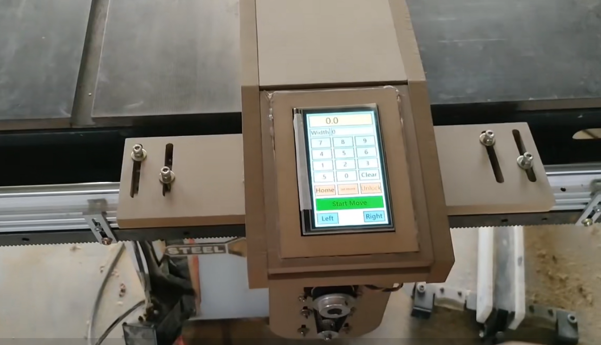

Workshop projectNinjaFence-Motion-G1
NinjaFence-Motion-G1 is a motorized fence positioning system for table saws. It accepts a target position input and drives a stepper-based mechanism to move the fence to the specified location with high repeatability. The design focuses on a single core function: precise, reliable fence positioning, reducing manual adjustment and improving workflow consistency.